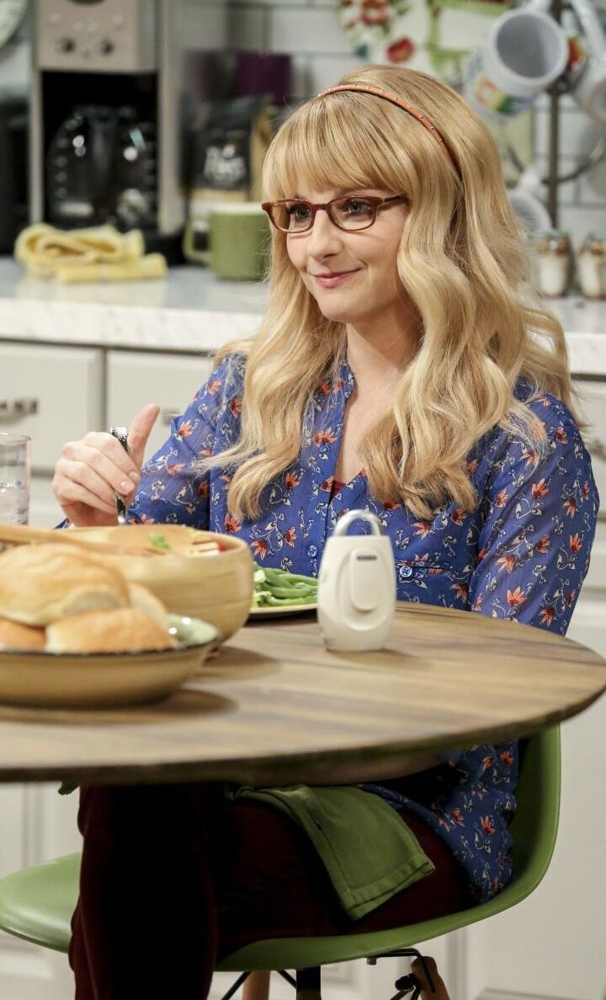

The Big Bang Theory Cast
Leonard Hofstadter
Dr. Leonard Leakey Hofstadter, Ph.D., is an experimental physicist at the California Institute of Technology who formerly roomed with Sheldon Cooper in Apartment 4A and now he and his wife Penny live in that apartment and they also formerly lived in Penny's apartment Apartment 4B. Along with Sheldon, he is one of the main male protagonists of The Big Bang Theory. Originally from New Jersey, Leonard attended Princeton University and was twenty-four years old when he received his doctorate with a Dissertation of the Year award for experimental particle physics
Sheldon Cooper
Dr. Sheldon Lee Cooper, B.Sc., M.Sc., M.A., Ph.D., Sc.D., is a Caltech theoretical physicist. Next to his best friend Leonard Hofstadter, he's the main protagonist of The Big Bang Theory. Originally from East Texas, Sheldon started college at the age of 11, receiving his first Ph.D. at the age of 16. As a kid, Sheldon was involved in numerous experiments as a "wunderkind", such as his plan to provide free electricity for his hometown by building a nuclear reactor - a plan stopped by government pen pushers claiming it's illegal to store yellowcake uranium in a garden shed. Proudly geeky, he has no qualms about speaking Klingon, wearing vintage t-shirts sporting superhero logos, or spouting various historical and cultural anecdotes. While he might claim to be the perfect human specimen, Sheldon does have his faults. Sheldon is characterized by a strict adherence to routine and hygiene; an overly intellectual personality; a tenuous understanding of irony, sarcasm and humor; and a general lack of humility or empathy, the former of which is demonstrated in the fact that he has no problem voicing to his peers his admiration for his superior intellect.
Penny Teller
Penny Teller is a fictional character on the American CBS sitcom The Big Bang Theory. She is the primary female character in the series. She lives in Apartment 4A with her husband Leonard Hofstadter across the hall from Sheldon Cooper and Amy Farrah Fowler who live in apartment 4B where Penny used to live. An aspiring, but mostly unsuccessful actress, she was born on a farm near Omaha, Nebraska, and worked at The Cheesecake Factory as a waitress until she quit in to take up acting full-time.
Rajesh Koothrappali
Dr. Rajesh Ramayan "Raj" Koothrappali, Ph.D., is an astrophysicist and Howard Wolowitz's best friend. He often hangs out at Leonard and Sheldon's apartment, though he has his own apartment (the Raj Mahal) in Pasadena. Originally from New Delhi, Raj has an Indian English accent and, ironically, dislikes Indian food and culture. He frequently portrays himself as having come from humble origins and growing up in poverty in India, only for his friends to remind him that his father is a gynecologist, drives a Bentley, and has a house full of servants. For the first six seasons, his principal characteristic was a case of selective mutism social anxiety disorder, which did not allow him to talk to women outside of his family.
Howard Wolowitz
Howard Joel Wolowitz, M.Eng., is a Jewish aerospace engineer and ex-astronaut. He is the son of an overbearing mother, Debbie Wolowitz, who couldn't care less about his scientific accomplishments and still talks to him as if he were a child. As the best friend of Rajesh Koothrappali, Howard often hangs out at Leonard and Sheldon's apartment with him. Although he's the only member of the group lacking a doctoral degree, he defends himself by pointing out that he not only has a master's degree in Engineering from MIT, but also designs important devices like the "space toilet" and telescope used at the International Space Station and components for satellites and space probes. Fancying himself a smooth ladies' man, Howard is rather confident in trying to woo girls (unlike the other three), mostly through creepy overtures and sometimes with his knowledge of foreign languages, of which he knows seven.
Bernadette Rostenkowski
Dr. Bernadette Maryann Rostenkowski, is a former waitress at the Cheesecake Factory and has earned her Ph.D in microbiology who has a lucrative job at the pharmaceutical company ZanGen. She began dating Howard Wolowitz in "The Creepy Candy Coating Corollary" and eventually married him in "The Countdown Reflection", Season 5 finale. She had her own apartment in Pasadena which Howard eventually moved into finally leaving Debbie Wolowitz's house. In Season 7, they start thinking about raising a family after Debbie has to convalesce.
Amy Farrah Fowler
Dr. Amy Farrah Fowler, Ph.D., is a neurobiologist. Amy is from Glendale, California. She also has a doctorate degree in neurobiology from Harvard University, i nspired by actor Mayim Bialik's own doctorate. She initially was discovered by Raj and Howard as a possible match for Sheldon through an online dating service. By Sheldon's own admission, she is most like him by any standard. Like him, she has previously avoided relationships (whether romantic or otherwise is entirely unclear). She has her own apartment. She also has a five-year plan to become Mrs. Cooper.